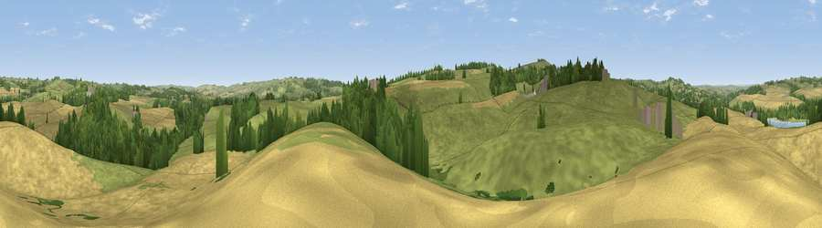

Viewpoint near Barrasford
#30629 in England · top 69% of its area beats it · near BarrasfordWhere it is
The exact computed spot (NY 90025 72975). Click the marker for map links.
The view, rendered

A 360° render of this exact spot computed from the terrain model, tree cover and land cover — summer colours, afternoon light, calibrated against photographs of famous viewpoints. Real trees, hedges and buildings will differ in detail.
The panorama
Grey silhouette: terrain skyline in each direction (720 bearings, Earth curvature and refraction included). Dashed green: skyline with trees (+15 m) and buildings (+8 m) as obstacles. Blue strip: how far the ground is visible on each bearing.
Where the view opens
Wedge length = distance to the farthest visible ground on that bearing (vegetation-aware). Rings at 10, 25 and 50 km.
What fills the view
56% grassland · 32% cropland · 10% woodland ·
Angular shares of the visible panorama (visual magnitude), not map area. Landscape diversity 0.43 (0–1 Shannon).
Key numbers
More beautiful places nearby
The staircase of upgrades: each row has a higher view potential than everything closer. Driving times are estimates from straight-line distance, calibrated against real road routing — check an actual route before setting out.
| Place | Direction | Drive | Score |
|---|---|---|---|
| Viewpoint near Walwick | SSW · 2 km | ~6 min | 62.8 |
| Viewpoint near Chollerford | SE · 4 km | ~10 min | 65.3 |
| Viewpoint near Fourstones | S · 5 km | ~11 min | 71.4 |
| Viewpoint near West Woodburn | NNE · 12 km | ~22 min | 73.4 |
| Viewpoint near Greenside | ESE · 25 km | ~41 min | 74.2 |
| Darden Rigg | NNE · 25 km | ~41 min | 77.0 |
| Viewpoint near Hepple | NNE · 28 km | ~45 min | 82.4 |
| Viewpoint c12273_7856 | N · 41 km | ~60 min | 83.7 |
55.05117, -2.15767 · source: screening · position refined by local search. Computed location — check access rights before visiting.